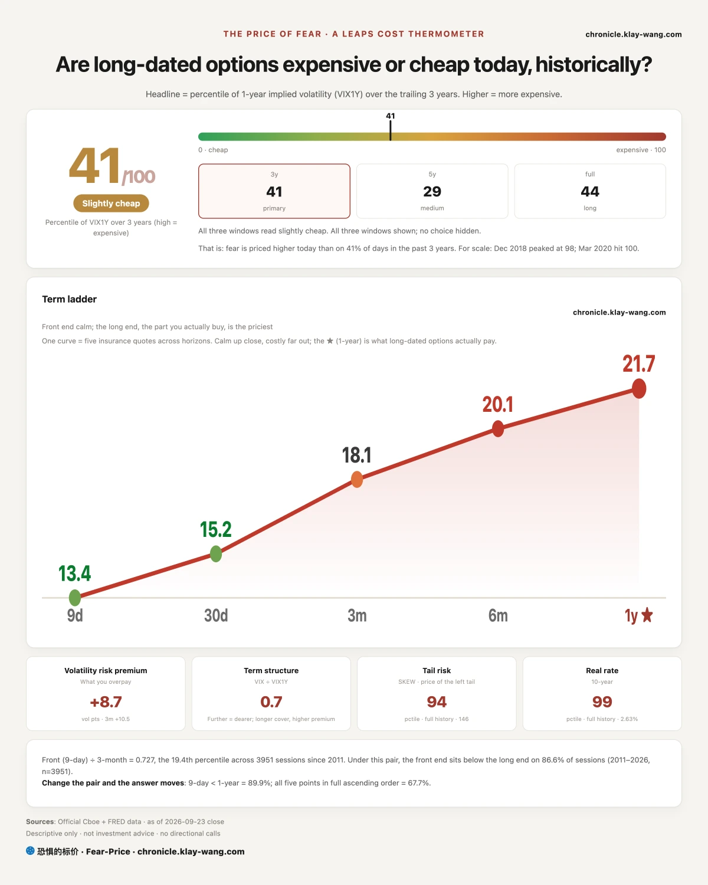
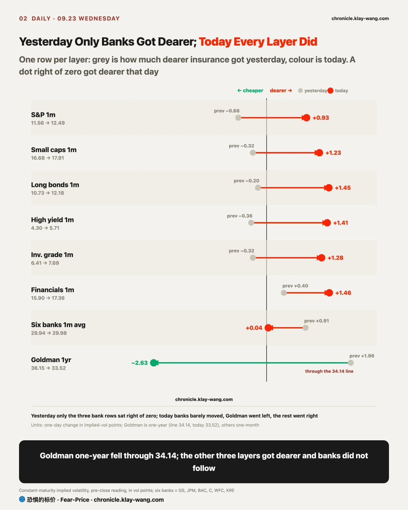
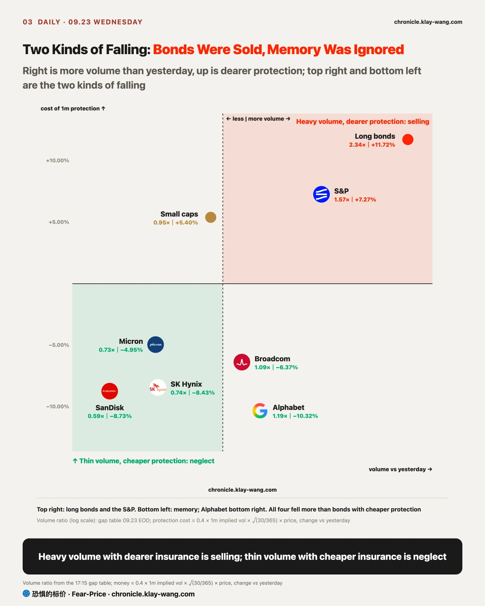
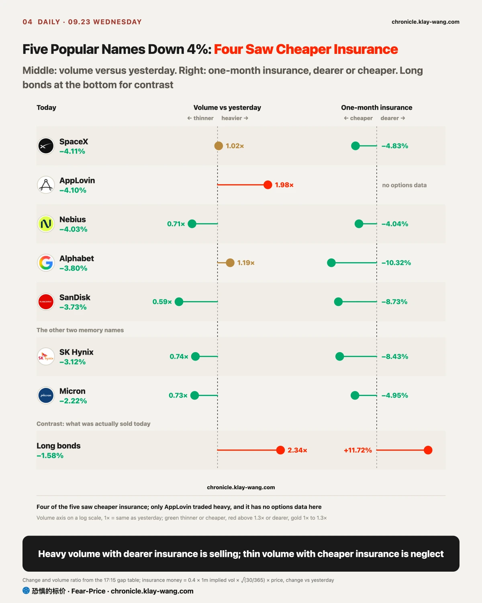
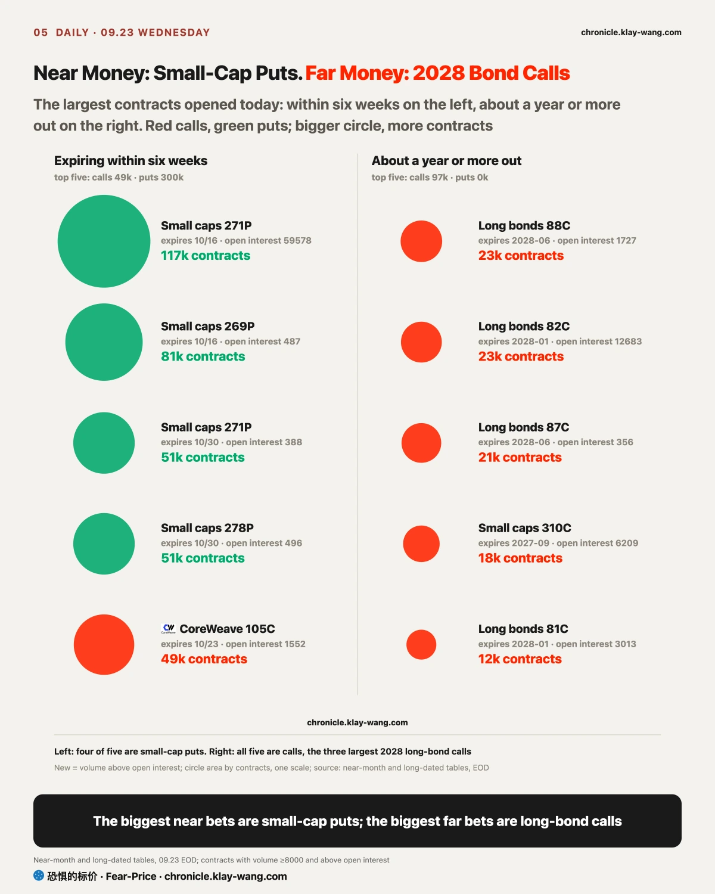

Fear-Price Index · Sep 23, 2026 · reading 40.9/100: one-year volatility VIX1Y at 21.69, in the 40.9th percentile of the past three years, where high means expensive. Daily ledger and definitions → chronicle.klay-wang.com · Please credit: Fear-Price Index
It was 39.0 yesterday and 40.9 today, so one-year insurance got only slightly dearer. The rise was at the near end: nine-day volatility went from 12.13 to 13.45 and one-month VIX from 14.21 to 15.18, while one-year moved only from 21.59 to 21.69. That matches the options: money is buying protection for the next few weeks and barely paying more for risk a year out.
VIX is 15.18 and CNN Fear and Greed is 34.7, so the K index that divides one by the other is 2.285, against 2.481 yesterday: about as many people say they are worried as yesterday, and a few more are paying for protection; K would need VIX above 35 to fall through 1. History at chronicle.klay-wang.com/kindex, the index itself at chronicle.klay-wang.com/fear-price.
One more reading belongs with today: the latest 10-year real rate is 2.63%, in the 98.9th percentile of its full history. The price of borrowing after inflation now sits in the most expensive band on record, which is the backdrop to the rates section. For you: a year of protection on the whole book costs a little more than yesterday, not by much, and most of the rise is within one month.

The PMI this morning beat across the board. The PMI, or purchasing managers index, asks company purchasing managers each month whether orders, output, hiring and input prices went up or down from the month before, and a reading above 50 means expansion. It is the first data of each month, weeks ahead of GDP and the price data, and the Fed uses it to judge whether the economy is running hot and whether prices will pick up again. Today the composite reading was the highest since July 2021, and hiring grew at the fastest pace in more than four years. The sharpest line was input prices, at the highest since October 2022; that is what companies pay for their inputs, and it tends to reach store shelves over the following months.
From this data to gold, there are three steps.
First, hot data gives the Fed reasons to keep hiking. CME FedWatch shows the odds of a hike at the end of October went from under one in ten a month ago to two thirds today.
Second, hike expectations lift real rates. Split the roughly 15 basis points the 10-year rose today, and inflation-protected yields rose about 12.5 and inflation expectations only about 2. The market was not worried about inflation running away; it was betting the Fed will hold rates higher for longer. The price of borrowing after inflation is the real rate: if a deposit pays 5% and prices rise 3%, your money really grows only about 2%, and that 2% is what counts.
Third, gold. Gold pays no interest. When the same money in Treasuries earns more after inflation, holding gold gives up more, and a stronger dollar makes gold, priced in dollars, dearer for foreign buyers, pressing the price again. That is why, with price readings this hot, gold fell today, with silver, gold miners and bitcoin falling too.
The five-year auction in the afternoon added fuel. The high yield came in about 3 basis points above where the market traded before, dealers, who backstop the auction, took their largest share since 2024, and other buyers took less. The Treasury announced the same day a buyback of up to 6 billion dollars of long bonds on Thursday, and long yields went higher anyway; the market seemed to find it too small. The 10-year closed at 5.11%, the highest since 2007.
For ordinary people, higher real rates hurt some and help others. Borrowers lose: 30-year mortgage rates are already above 7%, and car loans and credit cards that track rates tend to get dearer too, so monthly payments on a home or a car go up. Savers gain: deposits, money market funds and short-term Treasuries now pay more after inflation, so money sitting still is growing in value. The same headline is bad news for someone about to take out a mortgage and good news for someone holding spare cash.
Companies face the same math: plans that run on borrowing and pay back years later all have to be recalculated at a higher rate. The largest US burger chain closed down close to 5%; the direct cause was weaker US traffic, but on the same day, at its investor day, it said it would first put 8.5 billion dollars into supporting franchisees, with returns years away. Money far in the future is divided by a bigger rate when brought back to today, and spend-first, collect-later plans fare worse on days like this.

Insurance got dearer together, and it started with rates. The bond volatility index jumped from 79 to 95 in a day, more than a fifth; it is the price the market charges to insure the next month of Treasury price swings, so a jump means people are paying more to guard against rates lurching again. A month of long-bond insurance got about 12% dearer in money, the S&P about 7%, and insurance on high-yield and investment-grade bond funds rose even more.
Break it down, though, and two places did not follow. Bond funds got dearer to insure because the bonds they hold swing with Treasury rates; at the level of the companies themselves, bonds issued by big tech names such as Meta, Oracle, Amazon and Alphabet saw yields rise with Treasuries, but the extra interest they pay over Treasuries barely moved; only CoreWeave had to pay about thirty basis points more. That extra slice is the spread, the price the bond market puts on whether a company can pay back. When it does not move, what rose was the rate alone, and the market was not worrying about these companies paying their debts. On the bank side, one-month insurance on big banks such as JPMorgan and Goldman barely moved on average, and Goldman one-year fell. The shock stayed in rates, which fits the S&P falling less than 1% today.
Last week I said stocks priced this hike as one while bonds priced three or four, with the gap landing on the banks, and set the withdrawal line at 34.14 on Goldman one-year. Today it fell to 33.52, so I withdraw it: insurance on stocks and bonds rose, bank insurance did not move, and the gap closed from both sides.
What to watch next is where this goes. The day spreads on these tech names widen and bank insurance gets dearer, a rate story becomes a credit story, and the S&P will not fall this little.

Falling meant two different things for long bonds and memory, and two things tell them apart: volume, and the price of insurance.
Every trade has a buyer and a seller, and the price moves toward whichever side is more eager. Long bonds fell today on more than twice the volume of the day before, which means sellers were eager to get out, kept cutting the price to sell, and did sell a lot; someone was reducing positions. Their one-month insurance also got about 12% dearer, and insurance prices are bid up by people buying protection, so most likely those who did not sell were insuring what they kept. Sellers sold and holders hedged; both sides meant it. The S&P also traded heavy, only falling less.
Memory fell more than long bonds, yet on 20% to 40% less volume than the day before. Thin volume means sellers were not in a hurry; the price fell because buyers stepped back and only bid lower. Insurance got cheaper as well, so holders were not rushing to buy protection and do not expect a slide. There was no panic in this fall; buyers are waiting, for rates to settle and for the Micron report on September 30.
Several popular names that fell around 4% today, SpaceX, AppLovin, Nebius, Alphabet and SanDisk, also saw insurance cheapen, though AppLovin has no options data to check. On volume, only AppLovin rose clearly; SpaceX and Alphabet traded about as much as the day before, and Nebius and SanDisk traded less. On the stock side, today looked more like a repricing at new rates, with no sign of a stampede. Among them, someone opened a large put position in Alphabet: 10k of one late-October put traded in a day against open interest of only 139.
Options split the same shock into two time spans: the near end bought insurance, the far end bet on a turn.
Start with the near end. A put works like insurance against a fall: you pay a premium, and if the price drops past an agreed level, the seller covers the difference. Of the puts expiring within months, two thirds were on indexes, with small-cap puts more than six times the calls. One index put insures a whole basket more cheaply than buying protection name by name, so people worried about the market as a whole buy the index first. The timing fits too: the next few weeks bring the price data on September 30, jobs in early October and the Fed decision at the end of October, each able to push rates further. Single names sat more on the call side, so the worry is concentrated on the market.
How do we know it was new insurance and not old positions changing hands? One small-cap put had open interest under 500 and traded 80k in a day. Volume more than a hundred times the existing position can only have been opened today; whether it stays shows in settlement tomorrow.
Now the far end. A year and a half to two years out, the largest trade was in long-bond calls, close to 80k across four strikes in a day. Bond prices move opposite to rates: when rates fall, the interest on an old bond looks more valuable and its price rises, more so the longer the bond. So betting long bonds come back in two years is betting rates fall within two years. The usual thinking behind it: the faster rates rise, the more they slow the economy, and the Fed eventually has to turn.
The two ends do not contradict each other. The near end insures the next few weeks of turbulence, the far end bets on the direction a year or two out, and the same person can do both. Settlement data tomorrow morning will show how much stayed: volume includes opening and closing trades, and only a rise in open interest shows someone plans to hold.
This morning also settled three calls from yesterday, and this is the number that settles them: how much of the positions opened yesterday was still there after one night. The March 2027 financials strikes kept seven to nine tenths, so someone really has boxed in a bank position six months out, and that stands; the far positions in Intel, Nvidia and long bonds almost all stayed again. One I have to take back: of the Micron calls and puts opened together, only the put half stayed, so reading it yesterday as a bet on both directions was wrong.
If you hold index funds: the S&P fell less than 1%, yet protection has started getting dearer. At the close yesterday, S&P one-month insurance was still in the cheapest 5% of the past year, and today it rose only a little. In this spot, if it were me, I would add protection before the late-October decision; by the day the rate story reaches credit, it will not be this price.
If you hold long bonds: the sellers today were really selling, and far out someone is betting it comes back. Every day yields stay above 5%, the far money carries a little longer; if they fall back below 5%, it gains first.
If you hold memory or AI stocks: thin volume and cheapening insurance mean today was a repricing driven by rates, with no sign yet of anyone fleeing. Two things would change that view: falling on heavy volume, or company credit spreads starting to widen. The Micron report on September 30 is where this group settles.
If you hold gold: it fell today on opportunity cost, as the real interest available in Treasuries went up. If real rates do not turn back, hotter inflation readings may not help it.